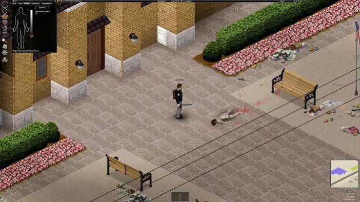
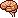
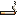
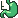
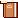
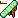

Início › Guia
Guia de sobrevivência
Para durar nos primeiros dias, priorize a furtividade, fuja de combates desnecessários contra hordas e garanta água, comida e uma base segura antes de qualquer outra coisa.

Primeiros passos
- Escolha o modo certo: comece em Sobrevivente ou Apocalipse, sem mods, para aprender as mecânicas base. O Modo Sandbox serve para ajustar a dificuldade e o respawn.
- Equilibre os traços: combine positivos úteis com negativos fáceis de contornar. Veja a lista completa de Traits.
- Comece em uma cidade tranquila: Rosewood e Riverside são mais amigáveis para iniciantes do que West Point ou Louisville.
1. Monte sua build
A ideia é escolher uma profissão pelo seu estilo de jogo e usar traços negativos fáceis de contornar para pagar vantagens físicas e de percepção.

Profissão
| Profissão | Para quem é |
|---|---|
| Bombeiro | Combate corpo a corpo, com bônus em força, condicionamento e machados. |
| Ladrão | Furtividade e saque: faz ligação direta em carros desde o dia 1. |
| Carpinteiro | Construir bases e barreiras, com bônus altos de Carpintaria. |
| Desempregado | Sem bônus, mas dá oito pontos extras para gastar em traços. |
Traços positivos essenciais
| Ícone | Traço | Custo | Por que escolher |
|---|---|---|---|
 | Fast Learner | -6 | 130% de XP em todas as perícias, exceto Strength e Fitness. |
| Keen Hearing | -6 | Raio de percepção maior: zumbis vindo por trás aparecem bem mais cedo. | |
| Cat's Eyes | -3 | Enxerga melhor à noite, o que ajuda a saquear no escuro. | |
| Dextrous | -2 | Transfere itens entre mochilas e contêineres na metade do tempo. | |
| Outdoorsy | -2 | Sofre menos com clima severo e quase não se arranha em árvores. | |
| Gymnast | -5 | +1 em Lightfooted e +1 em Nimble, úteis para se mover rápido. |
Traços negativos que valem os pontos
| Ícone | Traço | Pontos | Como contornar |
|---|---|---|---|
 | Smoker | +3 | Fume cigarros achados em zumbis e carros para segurar a infelicidade. |
 | Weak Stomach | +2 | Evite comida podre, queimada ou crua. |
| Short Sighted | +2 | Enxerga menos longe. Use óculos para reduzir o efeito. | |
 | Slow Reader | +2 | Só pede mais tempo seguro na base para ler livros de perícia. |
 | Slow Healer | +3 | Recupera-se mais devagar de ferimentos; planeje descansos mais longos. |
| Conspicuous | +4 | Zumbis notam você mais fácil. Use paredes e obstáculos como cobertura. |
Exemplo de build para iniciantes
- Escolha a profissão Bombeiro, para ter boa resistência física e combate sólido.
- Pegue os negativos Smoker, Weak Stomach, Short Sighted, Slow Reader e Slow Healer para acumular pontos.
- Gaste os pontos em Fast Learner, Keen Hearing, Cat's Eyes, Dextrous e Outdoorsy.
- Confira os custos exatos na tela de criação: eles podem mudar de uma versão para outra.
2. Escolha a cidade inicial

| Cidade | Dificuldade | Pontos fortes | Principais riscos |
|---|---|---|---|
| Rosewood | Baixa | Pequena e compacta, com quartel dos bombeiros e delegacia bem próximos. | Penitenciária a oeste, com muitos zumbis. |
| Riverside | Baixa a média | Bairros espaçosos, menos hordas na área nobre e condomínio fechado a leste. | Sem corpo de bombeiros fixo, com menos variedade de recursos. |
| Muldraugh | Média a alta | Armazéns industriais ao norte e uma clínica médica. | Rodovia principal com tráfego intenso de zumbis. |
| West Point | Alta | Loja de armas, loja de ferramentas e mansões isoladas a oeste. | Construções coladas e população enorme no centro. |
Se ainda está aprendendo, comece por Rosewood. Para um começo calmo, com mais espaço para montar a base, vá de Riverside. West Point só vale quando você já domina combate e furtividade. Veja todas no Mapa.
3. Combate e furtividade
- Evite lutas desnecessárias: barulho atrai hordas. Se não precisa lutar, não lute.
- Ande em vez de correr: contra um grupo pequeno você não precisa sair em disparada, e andar poupa fôlego.
- Pastoreie: puxe poucos zumbis de cada vez e confira se não há mais nenhum atrás de você.
- Derrube e pisoteie: empurre com a barra de espaço, fique sobre o zumbi caído para ele não levantar e mire na cabeça.
- Agache-se (Ctrl): reduz o ruído e a chance de ser notado.

Para mais detalhes sobre comportamento e perigos, veja a página de Zumbis.
4. Escolha e proteja sua base
- Localização: prefira casas na periferia ou imóveis com muros altos, longe do centro e das hordas.
- Recursos por perto: floresta para lenha, posto de gasolina para combustível e rio ou lago para pesca e água.
- Segundo andar: durma no pavimento de cima e cubra as janelas com lençóis ou cortinas para os zumbis não verem você.
- Defesa: barre portas e janelas do térreo com tábuas e pregos, e deixe uma corda de lençol numa janela superior como rota de fuga.

Água, comida e TV
- Água primeiro: encha garrafas e panelas logo no início, antes que a água encanada seja cortada.
- Perecíveis antes: coma frutas, carnes e laticínios das geladeiras enquanto há energia e guarde os enlatados para depois.
- Aproveite a TV: nos primeiros dias, sintonize o canal Life and Living (por volta das 6h, 12h e 18h) para ganhar XP em perícias do dia a dia antes que a energia acabe.
5. Prioridades de loot
- Ferramentas: martelo, serra e chave de fenda, para desmontar móveis e construir.
- Mochila: mochilas e pochetes ampliam a carga e reduzem o peso que você sente.
- Comida perecível: o que está nas geladeiras vai estragar primeiro.
- Livros e revistas: procure em livrarias, escolas e correios volumes de Carpintaria e Mecânica.
- Armas e proteção: delegacias, lojas de ferramentas e quartéis rendem machados, tacos e roupas mais resistentes.
Organize o saque
- Anote no mapa os prédios já vasculhados, os carros com chave e os locais com geradores.
- Estacione o carro virado para a saída antes de entrar em um prédio.
- Separe o estoque da base em caixas por categoria: ferramentas, remédios, munição e comida.